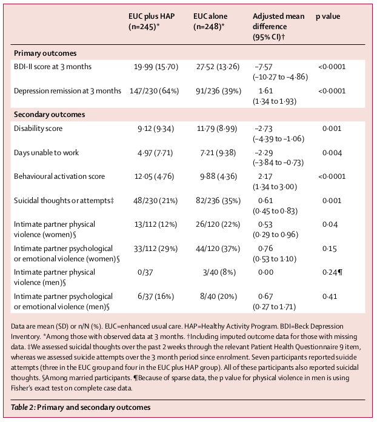

<?xml version="1.0" encoding="UTF-8"?>
<table title="table2" id="table2" class="tabcontent" xmlns="http://www.w3.org/1999/xhtml">
 <tr>
  <td>
   
   <p>../../cm-ucl/corpus-oa-pmr-v02/10.1016_S0140-6736(16)31589-6/tables/table2/table.png</p>
  </td>
  <td>
   <table class="table">
    <caption/>
    <tr>
     <th class="cell">_{BDI-IIscoreat3months} _{Depressionremissionat3months} ^{Secondaryoutcomes} ^{Disabilityscore} ^{Daysunabletowork} _{Behaviouralactivationscore} _{Suicidalthoughtsorattempts‡} _{Intimatepartnerphysical} ^{violence(women)§} ^{Intimatepartnerpsychological} ^{oremotionalviolence(women)§} _{violence(men)§^{Intimatepartnerphysical}} _{Intimatepartnerpsychological} _{oremotionalviolence(men)§} _{Inventory.*Amongthosewithobserveddataat3months.†Includingimputedoutcomedataforthosewithmissing^{Dataaremean(SD)orn/N(%).EUC=enhancedusualcare.HAP=HealthyActivityProgram.BDI=BeckDepression}} _{data.‡Weassessedsuicidalthoughtsoverthepast2weeksthroughtherelevantPatientHealthQuestionnaire9item,} _{whereasweassessedsuicideattemptsoverthe3monthperiodsinceenrolment.Sevenparticipantsreportedsuicide} ^{attempts(threeintheEUCgroupandfourintheEUCplusHAPgroup).Alloftheseparticipantsalsoreportedsuicidal} _{Fisher’sexacttestoncompletecasedata.^{thoughts.§Amongmarriedparticipants.¶Becauseofsparsedata,thepvalueforphysicalviolenceinmenisusing}} </th>
     <th class="cell">19·99(15·70) 147/230(64%) 9·12(9·34) 4·97(7·71) 12·05(4·76) 48/230(21%) 13/112(12%) 33/112(29%) 0/37 6/37(16%) </th>
     <th class="cell">27·52(13·26) 91/236(39%) 11·79(8·99) 7·21(9·38) 9·88(4·36) 82/236(35%) 26/120(22%) 44/120(37%) 3/40(8%) 8/40(20%) </th>
     <th class="cell">–7·57 _{(–10·27to–4·86)} 1·61 ^{(1·34to1·93)} –2·73 ^{(–4·39to–1·06)} _{(–3·84to–0·73)–2·29} 2·17 _{(1·34to3·00)} 0·61 _{(0·45to0·83)} 0·53 (0·29to0·96) 0·76 (0·53to1·10) 0·00 0·67 (0·27to1·71) </th>
     <th class="cell">&lt;0·0001 &lt;0·0001 0·001 0·004 &lt;0·0001 0·001 0·04 0·15 0·24¶ 0·41 </th>
    </tr>
    <tr>
     <td class="cell">^{Table2:Primaryandsecondaryoutcomes}</td>
    </tr>
   </table>
   <p>../../cm-ucl/corpus-oa-pmr-v02/10.1016_S0140-6736(16)31589-6/tables/table2/table.svg.html</p>
  </td>
 </tr>
</table>
